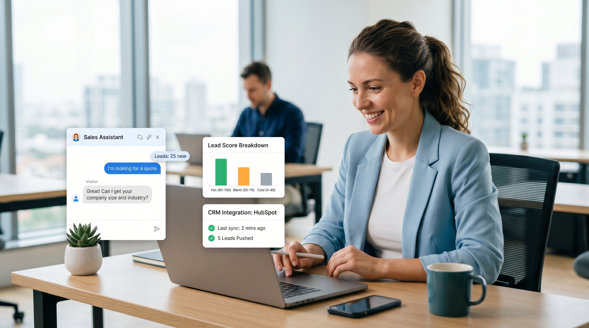

Your website gets 200 visitors a month. Maybe 30 leave an email. Maybe 5 book a call. The rest — 195 people — leave without a trace. And the worst part? Most of them visited outside business hours, when your phone wasn't answered and your inbox sat unattended.
If you run a B2B service business — a consultancy, an agency, a training firm, an IT services shop — you're probably handling inbound leads manually. Sorting legitimate prospects from time-wasters, chasing cold leads, missing follow-ups. It's a full-time job. Except you don't have a full-time person for it.
That's where an AI chatbot changes the equation. Not the toy bots that collect emails and vanish. A properly configured AI lead qualification chatbot — one that scores prospects, routes urgency, and feeds hot leads directly into your CRM — is the closest thing to a 24/7 sales development rep that most SMBs can actually afford.
Most small B2B service businesses qualify leads with one of two methods: a contact form that dumps everything into an inbox, or a phone call where someone triages on the fly. Both approaches have a fundamental bottleneck — human attention.
A contact form works when you have someone checking email constantly. But B2B decision-makers don't fill out forms at 10 PM and expect a reply before 9 AM. By the time you respond the next morning, they've already talked to two competitors who replied faster.
Phone-based qualification solves the speed problem but creates a scale problem. You can't hire a part-time SDR to answer calls at midnight. And even during business hours, a busy founder fielding discovery calls is not doing the high-value work that grows the business.
The real failure mode isn't that these methods don't work. It's that they work only for leads who happen to reach out during a narrow window. Everyone else silently exits, and you never learn why.
A lead qualification chatbot is not a FAQ widget. It runs a structured conversation designed to surface the information your sales process actually needs — budget, timeline, company size, specific pain point, decision-making authority.
Think of it as a digital BDR that:
The key phrase is disqualifying questions first. The goal is not to capture every lead — it's to surface the 15-20% of visitors who are genuinely in your ICP and give them a premium experience. Everyone else gets a polite redirect. This is how you cut triage time from hours to minutes.
When configuring your chatbot, focus on these signals. They apply broadly across consulting, IT services, training, agency, and professional services businesses:
Each answer gets weighted in the scoring model. A lead who's been actively evaluating solutions for 60 days with decision authority scores differently than someone who filled out the form because the chatbot asked nicely.
Here's what the conversation flow actually looks like for a B2B service founder's chatbot. Not generic — the kind of qualifying questions that prevent you from spending an hour on a discovery call with someone who has a ₹20,000 annual budget and no authority to spend it.
Bot: Hi! I help businesses like yours streamline their sales pipeline. What type of challenge are you working through right now?
→ Scaling outbound without a dedicated team
→ Managing incoming leads more efficiently
→ Building a repeatable content marketing engine
→ Not sure yet / something elseBot: Great. And approximately how many people are on your team?
→ Just me (solo founder)
→ 2–10 employees
→ 11–50 employees
→ 50+ employeesBot: Last one — what's your timeline for making a decision on something like this?
→ I need a solution in the next 30 days
→ Planning for the next quarter
→ Exploring options, no fixed timeline yet
→ Just researching for now
Based on these three answers, a lead with "Solo founder + exploring options + no fixed timeline" gets routed to an email nurture sequence. A lead with "11–50 employees + need solution in 30 days + managing incoming leads" gets a calendar booking link in under 60 seconds.
A chatbot that just collects leads into a inbox is marginally useful. A chatbot that feeds scored leads into your CRM, triggers a follow-up sequence, and notifies your team via Telegram is a genuine business asset. Here's how the integrations work:
Every qualified lead should land in your CRM with the qualification score and conversation transcript. If you're using the AgentGrow platform, qualified leads flow directly into your pipeline with tags like hot_lead, mid_tier, or nurture — and the chatbot conversation is attached as a note on the lead record. This means your first call with a prospect starts with full context instead of asking them to repeat everything they just typed.
Hot leads — the ones who pass all five qualification signals — get a direct booking link while the conversation is still active. Embedding Calendly or a similar tool inside the chatbot flow eliminates the back-and-forth that loses 30-40% of interested prospects. By the time they book, they've already been qualified. Your call is a consultation, not an interrogation.
Mid-tier and nurture leads enter an automated email sequence tailored to their stated pain point. The chatbot captures which challenge they selected in the qualification flow, so the first email in the sequence references it directly. This level of personalization requires zero manual tagging — it happens because the chatbot passed the context forward.
When a lead crosses a score threshold — say, 80 out of 100 on your qualification rubric — your Telegram receives an immediate notification: the lead's name, company, stated challenge, and a direct link to their CRM record. You can be having lunch and still book a call within minutes of a high-intent prospect visiting your site. This is the "24/7 without being on 24/7" promise actually delivered.
From implementations across small IT consultancies, marketing agencies, business consultants, and training firms using the AgentGrow platform, the patterns that show up consistently:
These are typical outcomes for B2B service founders who are actively marketing their business and generating some inbound traffic — not magic numbers, but realistic benchmarks once the qualification logic is correctly configured.
You don't need a developer to deploy a basic lead qualification chatbot. Here's the sequence most founders follow for a first pass at the setup:
Aim to get to a live chatbot in the same day you start. You can refine the qualification logic based on what you see in the first two weeks — which questions filter out bad leads, which answers correlate with booked calls. The first version doesn't need to be perfect. It needs to exist.
When evaluating an AI chatbot against your current lead handling process, the comparison isn't "chatbot vs. no chatbot." It's "chatbot vs. a world where you either hire a part-time SDR, lose hot leads to slow response times, or spend discovery calls on people who were never a fit in the first place."
A part-time SDR costs ₹25,000–₹40,000 per month and works 8 hours a day. An AI chatbot qualifying leads 24/7 on the AgentGrow platform starts at a fraction of that — and never files a leave request. For a B2B service founder who is currently doing their own lead triage between client calls, the real cost isn't the tool. It's the opportunity cost of an hour spent sorting emails instead of closing deals.
Every day you run without a lead qualification system in place, you're losing prospects who visited at midnight, left a half-finished form, and never came back. The 195 people who didn't convert this month didn't convert because there was no one to talk to them at the moment they were ready.
An AI chatbot changes that equation. Not by replacing your sales process — by making sure no qualified prospect leaves without a next step in place.
Start with AgentGrow. The platform is built for B2B service founders who want a fully managed AI agent — qualification chatbot, CRM routing, Telegram alerts, and email nurture sequences — without assembling a custom toolstack. 119 hands-on labs, 5,000+ professionals trained, and a 4.91/5 rating on Oracle's marketplace.
Use code FIRST10 for ₹1,000 off your first month.
If you're ready to see what a properly configured lead qualification chatbot looks like for your specific business, book a free consultation at agentgrow.io. Tell us your ICP, your current inbound volume, and what's breaking — we'll show you exactly how the qualification logic maps to your situation.